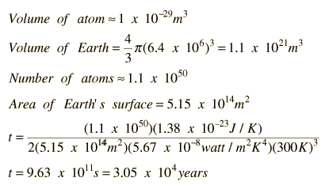

Kelvin Cooling Time for the Earth
Presuming that the Earth was once very hot and had cooled to about 300K by radiation into space, Kelvin calculated a radiative cooling time for the Earth. The cooling time can be modeled by

It is reasonable to assume that the term involving the early hot temperature of the Earth can be neglected. If the hot temperature is more than 3.16 times the final temperature, then the contribution of the high temperature term is less than 1%. For example, for the 300K ambient on the earth, an original temperature higher than 1000K would make the second temperature in the expression above negligible. Taking only the term involving the current Earth temperature, the cooling time can be estimated as follows:
The Kelvin cooling time for the Earth is then about 30,000 years. There are many ways you could refine the calculation above, but the point is made that this cooling time is much shorter than the age of the Earth as determined by other means.
Kelvin's calculation pointed to the the existence of an internal heat supply which has kept the Earth hot long after the radiative cooling time. His work was done before the discovery of radioactivity and the understanding that natural radioactive decay provides a source of heat to the Earth.
| Modeling the Radiative Cooling of a Hot Sphere |
| HyperPhysics***** Thermodynamics | R Nave |